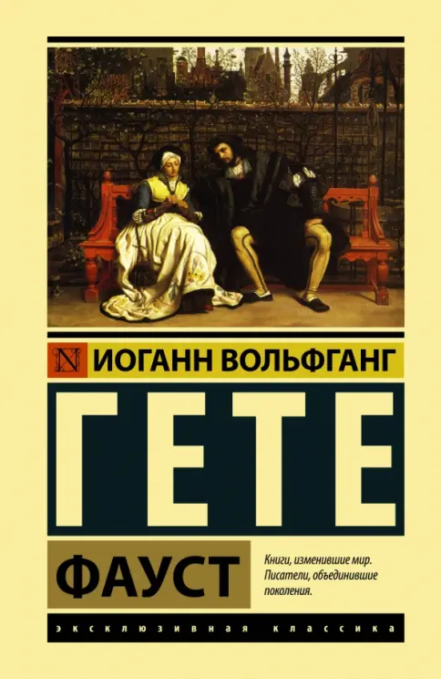

Вечные темы: добро и зло, смысл жизни, границы познания, ответственность человека за свои поступки.
Значение в культуре: «Фауст» — главный текст немецкой литературы, оказал огромное влияние на философию (Шпенглер, «Закат Европы»), музыку (Лист, Гуно, Берлиоз) и литературу XX века.
Что говорит Гёте: Человек имеет право на ошибку, но вечное стремление вперёд и деяние на благо других способны искупить любую вину. Именно поэтому душа Фауста спасается в финале.
